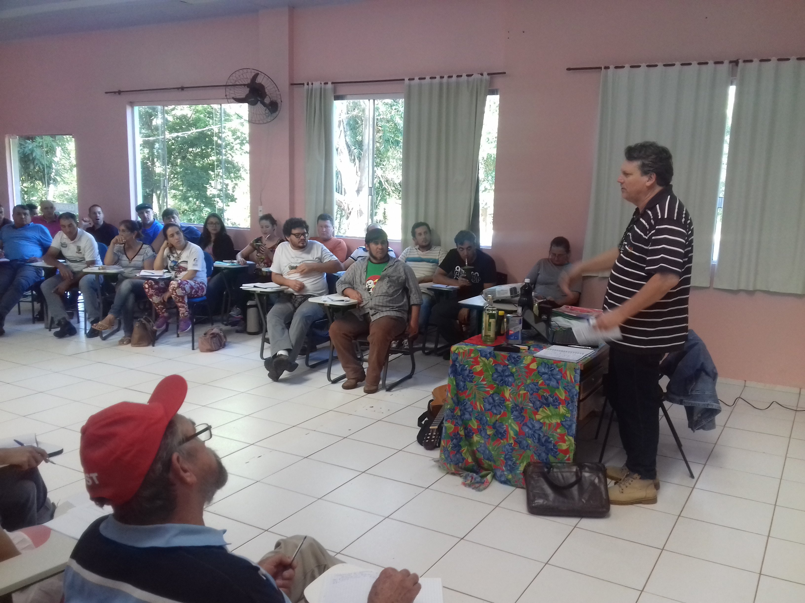
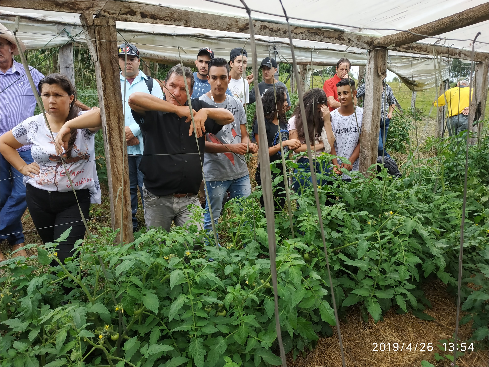
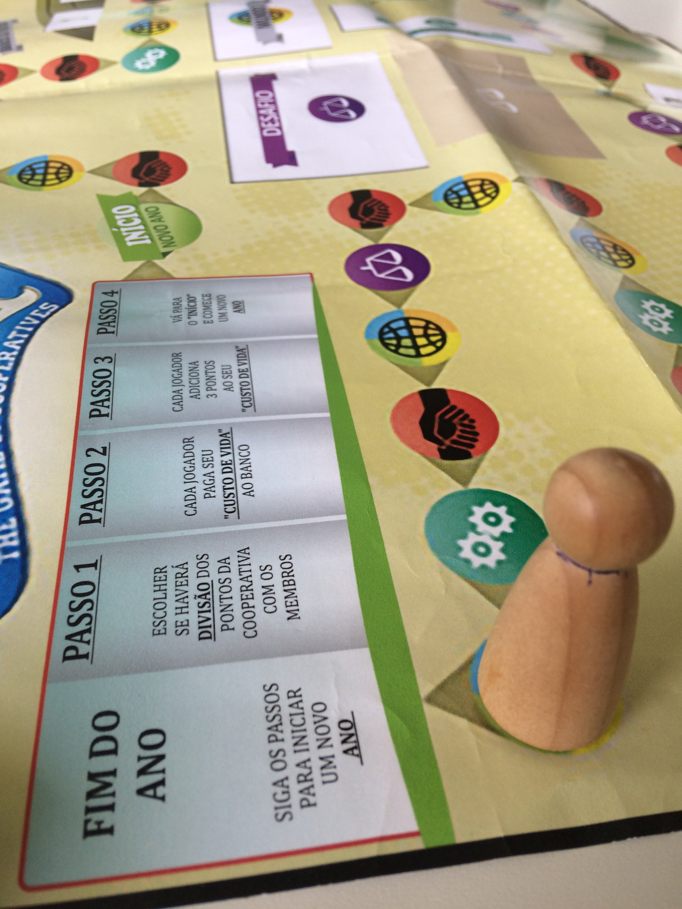
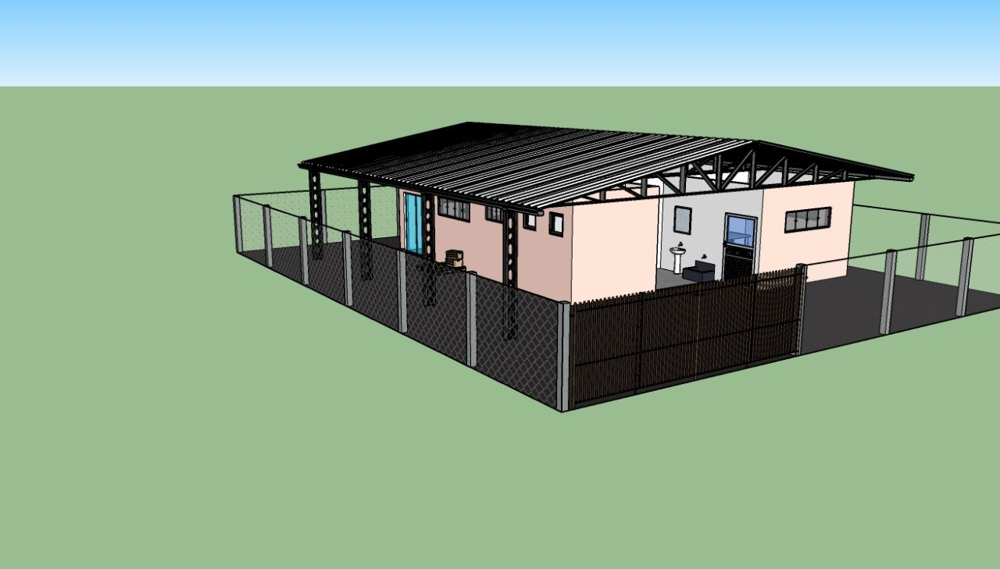

Trajetória, princípios norteadores e compromisso acadêmico com o cooperativismo, a agricultura familiar e o desenvolvimento territorial.
Apresentação e Trajetória Institucional
O NECOOP (Núcleo de Estudos em Cooperação) é um grupo de pesquisa e extensão universitária vinculado à Universidade Federal da Fronteira Sul (UFFS), sediado no Campus Laranjeiras do Sul (PR). Fundado em 2012 a partir das demandas regionais de articulação entre o conhecimento científico e as dinâmicas sociais da região, o núcleo atua diretamente no estudo, assessoria e fortalecimento de organizações coletivas.
A atuação do NECOOP pauta-se pela indissociabilidade entre ensino, pesquisa e extensão. O núcleo articula estudantes e docentes de cursos de graduação (como Agronomia, Ciências Econômicas, Engenharia de Alimentos, Licenciatura em Educação do Campo e outros) e do Programa de Pós-Graduação em Agroecologia e Desenvolvimento Rural Sustentável (PPGADR), promovendo a formação acadêmica ancorada na realidade empírica.

Figura 1. Atividade de formação e extensão universitária realizada no auditório do Ceagro (Rio Bonito do Iguaçu/PR). Evidência da articulação do núcleo junto aos movimentos e cooperativas da região.
Áreas de Atuação
O trabalho do NECOOP organiza-se em quatro eixos temáticos fundamentais, nos quais convergem as pesquisas científicas, os projetos de extensão e as atividades de assessoria técnica e formação:
Cooperativismo e Economia Solidária
Investigação e apoio às organizações econômicas coletivas, empreendimentos habitacionais e rurais, cooperativas populares, processos de autogestão e dinâmica de redes solidárias.
Agroecologia
Pesquisa aplicada, extensão e processos formativos voltados à transição agroecológica, fortalecimento da agricultura familiar e sustentabilidade dos agroecossistemas.
Reforma Agrária
Estudos sobre assentamentos rurais, formas de organização social, viabilidade econômica dos sistemas produtivos e dinâmicas territoriais da Reforma Agrária.
Educação e Formação
Desenvolvimento e aplicação de processos educativos, metodologias participativas, oficinas pedagógicas e materiais voltados à formação cooperativa e comunitária.

Figura 2. Acompanhamento e capacitação prática em Sistema de Produção Integrada (SPDH) na cultura do tomate sob ambiente protegido (2019). Apoio à transição agroecológica.
Metodologia e Práxis Universitária
Uma das marcas fundamentais do trabalho de extensão do NECOOP é o desenvolvimento e a aplicação de metodologias participativas de ensino-aprendizagem. Dentre as ferramentas consolidadas pelo núcleo estão os Jogos Cooperativos e a aplicação prática do Jogo da Cooperação.
Essas oficinas pedagógicas e vivenciais são utilizadas no trabalho direto com grupos comunitários, cooperativas, agricultores familiares e estudantes, promovendo a reflexão crítica sobre ação coletiva, liderança, autogestão e resolução cooperativa de problemas no ambiente produtivo e social.

Figura 3. Detalhe do tabuleiro do "Jogo da Cooperação". Material pedagógico vivencial desenvolvido para formação em autogestão e dinâmica cooperativa.
Rigor Científico e Inserção Territorial
As pesquisas desenvolvidas no âmbito do NECOOP sustentam-se em dados primários coletados em trabalho de campo, diagnósticos socioeconômicos, análises de governança e levantamentos cadastrais e de produção. A produção acadêmica do grupo — que inclui artigos em periódicos indexados, dissertações de mestrado, e-books e cadernos técnicos — visa tanto ao avanço do debate científico sobre cooperativismo quanto ao retorno direto das evidências para as comunidades pesquisadas.

Figura 4. Modelagem tridimensional do projeto de agroindústria indígena Guarani. Parceria com diversas entidades, em apoio ao desenvolvimento sustentável de comunidades tradicionais.